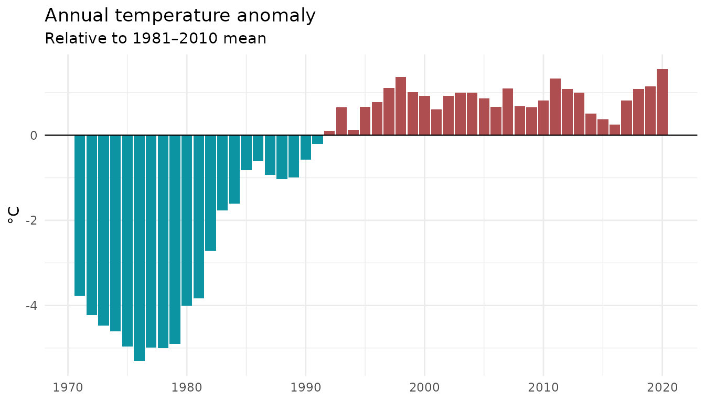

vignettes/anomaly-and-aggregation.Rmd
anomaly-and-aggregation.RmdEnvironmental time series frequently contain missing values, and international standards from organisations like the World Meteorological Organisation (WMO) specify exactly how much missing data is acceptable before an aggregated value should not be reported. er.helpers provides two complementary sets of tools for these situations:
aggregate_with_criteria() returns the requested aggregate, or NA if either the total number of missing values or the length of the longest consecutive run of missing values exceeds the specified thresholds.
Thresholds can be expressed as counts (integers ≥ 1) or proportions (0 < value ≤ 1):
# A month of daily temperatures with a few missing days
# randomize sequence of daily temperatures and missing values to demonstrate consecutive-missing criteria
set.seed(42)
daily_temp <- sample(c(15:25, NA, NA, NA), size = 30, replace = TRUE)
# Allow up to 3 missing days and no more than 2 consecutive missing days
aggregate_with_criteria(daily_temp, max_missing = 3, max_consecutive = 2)
#> [1] 19.62963
# Tigthen the criteria: allow at most 2 missing days and no more than 1 consecutive missing day
aggregate_with_criteria(daily_temp, max_missing = 2, max_consecutive = 1)
#> [1] NAmean_with_criteria(), min_with_criteria(), max_with_criteria(), and sum_with_criteria() call aggregate_with_criteria() with the appropriate fun argument pre-set:
mean_with_criteria(daily_temp, max_missing = 3, max_consecutive = 2)
#> [1] 19.62963
min_with_criteria(daily_temp, max_missing = 3, max_consecutive = 2)
#> [1] 15
max_with_criteria(daily_temp, max_missing = 3, max_consecutive = 2)
#> [1] 25
sum_with_criteria(daily_temp, max_missing = 3, max_consecutive = 2)
#> [1] 530dplyr
A common workflow is to compute a monthly aggregate from daily data:
set.seed(42)
daily_data <- tibble(
date = seq.Date(as.Date("2020-01-01"),
as.Date("2020-12-31"), by = "day"),
temperature = runif(366, min = 5, max = 25)) |>
# Introduce ~8 % random missing values
mutate(temperature = ifelse(runif(n()) < 0.08, NA, temperature))
monthly_means <- daily_data |>
mutate(year = format(date, "%Y"),
month = format(date, "%m")) |>
group_by(year, month) |>
summarise(mean_temp = mean_with_criteria(
temperature, max_missing = 3, max_consecutive = 2),
.groups = "drop")
monthly_means
#> # A tibble: 12 × 3
#> year month mean_temp
#> <chr> <chr> <dbl>
#> 1 2020 01 17.1
#> 2 2020 02 NA
#> 3 2020 03 13.5
#> 4 2020 04 15.4
#> 5 2020 05 16.3
#> 6 2020 06 14.6
#> 7 2020 07 NA
#> 8 2020 08 13.7
#> 9 2020 09 14.3
#> 10 2020 10 12.9
#> 11 2020 11 15.1
#> 12 2020 12 15.6Months where the missing-data criteria are exceeded will show NA, making it easy to flag them downstream.
calc_annual_anomaly() subtracts the mean of a reference period from every observation. The reference period mean is itself computed with mean_with_criteria(), so the same missing-data safeguards apply.
set.seed(7)
# Simulate 50 years of annual mean temperatures
temp_series <- tibble(
year = 1971:2020,
temperature = 12 + cumsum(rnorm(50, mean = 0.03, sd = 0.4)))
# Define the WMO 1981–2010 climate normal as the reference period
reference_period <- c(1981, 2010)
temp_series <- temp_series |>
mutate(anomaly = calc_annual_anomaly(temperature,
year, period = reference_period))
head(temp_series)
#> # A tibble: 6 × 3
#> year temperature anomaly
#> <int> <dbl> <dbl>
#> 1 1971 12.9 -3.77
#> 2 1972 12.5 -4.22
#> 3 1973 12.2 -4.47
#> 4 1974 12.1 -4.61
#> 5 1975 11.8 -4.96
#> 6 1976 11.4 -5.31
library(ggplot2)
ggplot(temp_series, aes(x = year, y = anomaly, fill = anomaly > 0)) +
geom_col(show.legend = FALSE) +
geom_hline(yintercept = 0, linewidth = 0.4) +
scale_fill_manual(values = c("#0D94A3", "#AE4E51")) +
labs(title = "Annual temperature anomaly",
subtitle = paste0("Relative to ", reference_period[1], "\u2013",
reference_period[2], " mean"),
x = NULL, y = "\u00b0C") +
theme_minimal()
If observations are missing inside the reference period, calc_annual_anomaly() passes max_missing and max_consecutive to mean_with_criteria(). If the reference mean cannot be calculated the function returns NA for every year and issues a warning:
# Introduce missing values in the reference period
temp_with_gaps <- temp_series$temperature
temp_with_gaps[11:15] <- NA # years 1981–1985 are missing
anomalies_strict <- calc_annual_anomaly(
x = temp_with_gaps,
year = temp_series$year,
period = reference_period,
max_missing = 0, # zero tolerance for missing baseline data
max_consecutive = 0)
#> Warning in calc_annual_anomaly(x = temp_with_gaps, year = temp_series$year, :
#> Missing values for the anomaly reference period.
head(anomalies_strict)
#> [1] NA NA NA NA NA NA
# Relax the constraint: allow up to 20 % missing in the reference period
anomalies_relaxed <- calc_annual_anomaly(
x = temp_with_gaps,
year = temp_series$year,
period = reference_period,
max_missing = 0.20,
max_consecutive = NULL # no consecutive-missing constraint
)
#> Warning in calc_annual_anomaly(x = temp_with_gaps, year = temp_series$year, :
#> Missing values for the anomaly reference period.
head(anomalies_relaxed)
#> [1] -4.203734 -4.652443 -4.900160 -5.035077 -5.393346 -5.742258| Argument | Description | Accepts |
|---|---|---|
max_missing |
Maximum allowable missing values | Count (integer) or proportion (0–1) |
max_consecutive |
Maximum allowable consecutive missing values | Count (integer) or proportion (0–1) |
fun |
Aggregation function (aggregate_with_criteria only) |
Any function, e.g. mean, sum
|
period |
Start and end year of the anomaly baseline |
c(start, end) or NULL for full range |
Setting a threshold to NULL or 1 disables that constraint entirely.